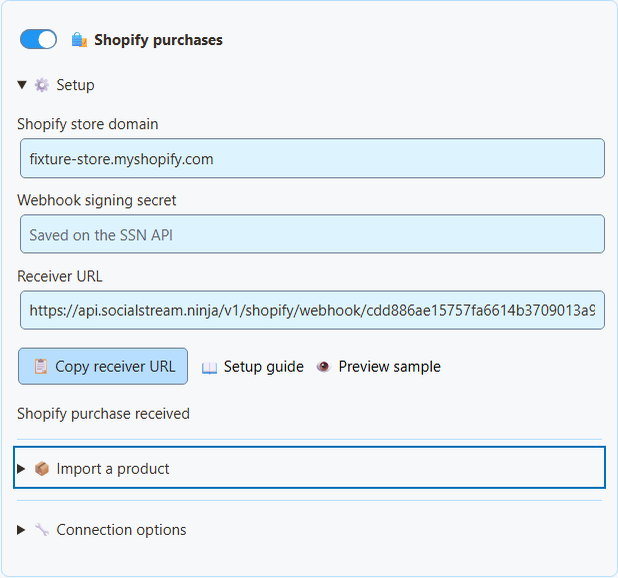
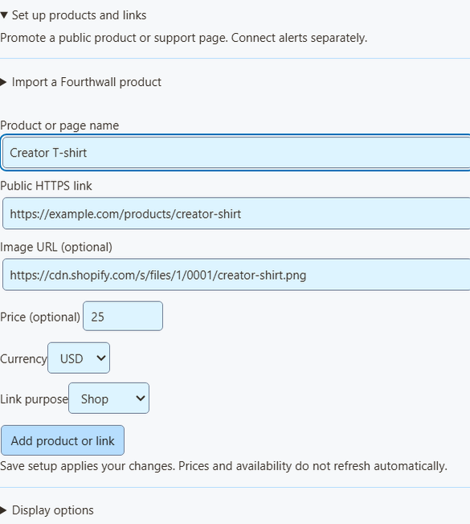
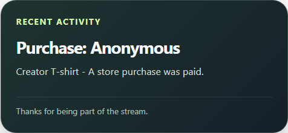

Shopify in Social Stream Ninja
Promote public products with images, prices, readable links and QR codes. Receive signed paid-order notifications as purchase alerts in the activity feed, multi-alerts and Event Flow. Product promotion works independently of payment alerts.
Connect purchases · Import products · OBS overlays · Test safely · Limits and troubleshooting
Availability: automatic alerts require the Shopify receiver to be deployed and enabled on the SSN API. If it is unavailable, Save setup reports an error and does not enable Shopify. Public product import and manual promotion work independently. This guide describes the integration code; a live merchant test is still required before claiming live-service validation.
Connect paid purchases
- In Shopify, open Settings → Notifications → Webhooks. Locate the signing secret shown for manually created webhooks. This is different from a Storefront token.
- In SSN, open Monetization → Shopify purchases → Setup. Enter your permanent
your-store.myshopify.comdomain and webhook signing secret. Enable Shopify purchases, then click Save setup. - Click Copy receiver URL. In Shopify, create a webhook with event Order payment, format JSON, and that receiver URL. Select a supported stable webhook API version; this integration was developed against the 2026-07 order contract.
- Save the Shopify webhook. Keep SSN on to process purchases. The receiver verifies the raw-body HMAC and matching store before accepting order data.

The signing secret is encrypted on the SSN receiver and cleared from the input after saving. A separate private reader key stays on this device. Neither is included in OBS links or viewer QR codes. Shopify uses its dedicated receiver; the older remote API control toggle is not needed.
A generated URL means configuration was saved, not that Shopify has delivered anything. Status distinguishes waiting, a verified test, a skipped event and a received purchase. Changing stores requires Disconnect first. Turning Shopify off pauses local processing; Disconnect deletes its receiver and queued events. Remove the corresponding Shopify webhook when disconnecting.
Shopify: manually creating webhooks · Shopify: verifying deliveries
Import a public product
- Enter your
myshopify.comdomain in Shopify setup. You do not need to enable purchase alerts or enter a signing secret to import products. - Expand Import a product, paste a public product URL, and click Load product details.
- If tokenless access does not expose the product, supply a public Storefront token. Shopify's Headless channel can create one. Publish the product to that storefront and the Online Store. Do not paste an Admin API token or private Storefront token.
- SSN opens the existing Products & support links editor with the title, image, price and canonical public link returned by Shopify. Review them, click Add product or link, enable the catalog and Save setup.

Import reads one product at a time using the Storefront API. The token is optional, used only for that request and cleared afterward. Shopify's canonical Online Store URL becomes the public link, including a custom domain when Shopify returns one. Unavailable products and products without a public Online Store link are excluded.
A price is filled only when the product's minimum and maximum variant prices match. Otherwise it stays blank; choose a specific price yourself only if it accurately describes the offer. Imported information is a snapshot, not continuous inventory or pricing synchronization. Review it when your store changes. You can always use manual product entry instead.
Shopify Storefront authentication · Product query · Creating a public token using Headless
Use the existing overlays
Under Overlay link for, choose Products & support links. Use Product showcase only for images, prices and QR codes, Support card only for a small permanent or periodic shop link, or Activity alerts only for purchases. Copy each desired OBS link to a separate Browser Source, starting at 800 × 600.
Set the optional alert source filter to shopify to show only Shopify activity in the generic monetization overlay. Enable Products & support links for that generic view. Existing multi-alerts and the activity feed receive Shopify purchases independently of the product catalog.

Product cards link to public product pages. Use Copy public link to share the clickable address in chat, and test the QR code from a phone at your final stream size. A purchase alert never borrows a QR code or image from an unrelated rotating product. Order webhooks do not supply reliable product image URLs, so purchase alerts use text; imported promotional cards can show images.
For Event Flow, choose Event Type purchase and filter the source/type to shopify. Compare meta.commerce.orderTotal for order-value rules and check meta.commerce.currency before comparing amounts. These are purchases: no hasDonation or donoValue is emitted, and donation goals do not increase. A promotional card labelled Gift does not change how order events are classified. Shipping to another person is not evidence of a creator gift.
Preview and test safely
Preview sample opens an isolated sample overlay without a session connection. It never triggers Event Flow, changes totals, or verifies a payment.
Shopify orders explicitly marked test: true are acknowledged and shown as tests in receiver status, without purchase alerts or actions. Missing test flags, unpaid/partially paid orders, cancelled orders, zero totals, and stale or invalid timestamps are also skipped. Use a development store for end-to-end testing. An admin sample that lacks a trustworthy test flag should not be sent into an active rewards workflow; the SSN preview is the safe appearance check.
What we checked without a store
Isolated tests cover real HTTP delivery with signed Unicode JSON, tampered signatures, duplicate deliveries, test-order isolation, currency precision, oversized requests, private customer data removal, and offline recovery through the actual SSApp runtime. These checks do not place orders or require a merchant account.
The production Shopify receiver remains disabled pending a real store delivery test. Manual product promotion is usable independently. Shopify CLI sample webhooks can help test payload handling, but do not validate subscriptions or retries and still require app credentials. See Shopify CLI webhook testing limits.
Delivery limits and troubleshooting
- Receiver unavailable: the SSN API operator must deploy and enable the Shopify receiver. See the server setup. Do not use the legacy unsigned session webhook URL as a substitute.
- Waiting for an event: verify Order payment, JSON, the exact receiver URL, matching permanent store domain and the signing secret for that webhook. A custom app's webhook uses that app's signing secret, not the manual Notifications secret.
- Signed event skipped: this integration requires a positive fully paid order,
test: falseand a signed bodyupdated_atwithin the past seven days (with five minutes of future-clock tolerance). It does not infer payment from order creation, fulfillment or inventory. - SSN was offline: accepted events queue for up to seven days. Restart SSN to resume. Status and pending work survive a receiver restart. The service has bounded storage and asks Shopify to retry when it cannot durably queue work.
- Duplicates: the receiver deduplicates by store/order, even if Shopify delivery IDs differ. Deduplication records last seven days. SSN persists handled IDs before acknowledgment. A crash between an external action and that save can still repeat the action; use your own idempotency guard for consequential automation.
- Missing buyer name: intentional. SSN excludes customer names, email, addresses, order notes, line-item custom properties, checkout URLs and raw order IDs. Public product titles remain plain text.
- Refunds or order changes: this is a live alert feed, not an accounting or fulfillment system. Refunds, cancellations and edited totals do not reverse prior alerts. No order-history reconciliation or automatic product removal is included.
See the Shopify event contract and shared product and QR guide.